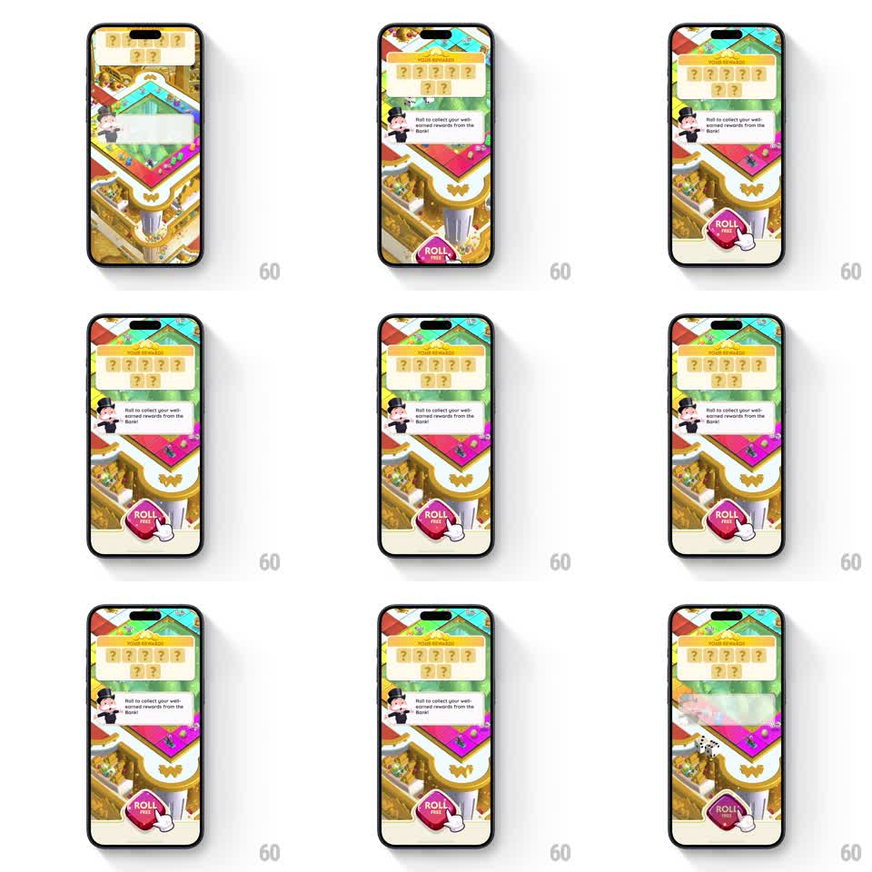

Media
Frame-by-frame

Rebuild this animation 1:1: Monopoly Go's roll prompt - a mascot speech bubble, a pulsing ROLL button, and a tapping hand indicator all scale down and fade out together the moment the button is tapped.

Rebuild this animation 1:1: Monopoly Go's roll prompt - a mascot speech bubble, a pulsing ROLL button, and a tapping hand indicator all scale down and fade out together the moment the button is tapped.
## Integration
Integration: stack-agnostic spec - springs given as stiffness/damping, timed motions as duration + curve; map every value to your framework and animation library of choice.
## Scene
The Monopoly Go board with a "YOUR PRIZES! MONTE CARLO" banner of question-mark tiles, Mr. Monopoly with a speech bubble ("Roll to collect your well-earned rewards from the Bank!"), a large pink ROLL button, and a white gloved hand indicator tapping it.
## Motion spec
Pattern: synchronized dismiss on tap, ~600ms.
- Idle: the hand indicator taps the ROLL button in a loop (press down 150ms, release 250ms, 1.5s cycle) while the button gently pulses (scale 1 to 1.05, 1.5s).
- On the real tap: the button presses (scale 0.92, 100ms).
- The speech bubble, mascot emphasis, and hand indicator all scale down to 0.6 and fade out together (300ms, ease-in), perfectly synchronized.
- The ROLL button shrinks and fades with them (250ms) as the board begins the dice-roll sequence - dice tumbling in from the top.
## Calibration
- The three elements exit on the exact same timing curve - any drift between them reads as a bug.
- The hand indicator belongs to the prompt layer; it must not persist into the dice roll.
## Reduced motion
Prompt elements fade out without scale.
## Don't miss
- The speech bubble tail points at Mr. Monopoly, not at the button.
- The button label stacks "ROLL" over "FREE" in the pink blob shape.